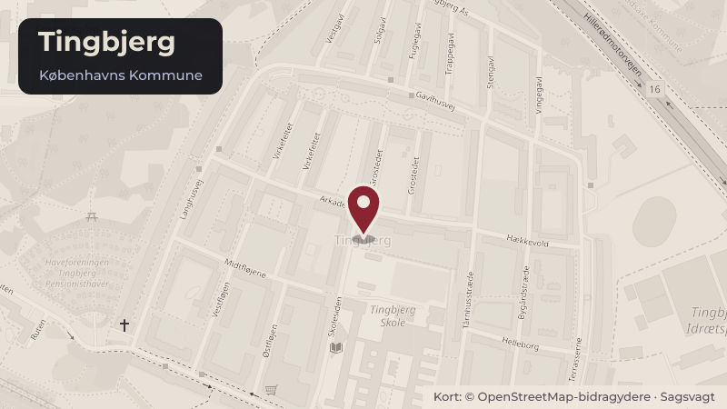

Besluttet 20. august, Borgerrepræsentationen
Medlemsforslag om hurtig handling og lokale løsninger i Tingbjerg
Borgerrepræsentationen pålægger Kultur-, Fritids- og Borgerserviceforvaltningen og Klima-, Miljø- og Teknikforvaltningen, i samarbejde med relevante forvaltninger, boligorganisationer og lokale aktører, hurtigst muligt at udarbejde en samlet kortlægning og plan om hurtige forbedringer af de fysiske …
Steder i sagen: Tingbjerg

Kort fortalt
- Hvem
- Borgerrepræsentationen
- Hvornår
- Torsdag 20. august 2026
- Status
- Besluttet. Sagen blev udsat til næstkommende ordinære møde den 17.
Sagens vej
- 20. augustBorgerrepræsentationenUdsat
- 17. septemberBorgerrepræsentationenForkastet
Læs hele sagen Kommunens egen tekst
Medlemsforslag
Det foreslås,
• at Borgerrepræsentationen pålægger Kultur-, Fritids- og Borgerserviceforvaltningen og Klima-, Miljø- og Teknikforvaltningen, i samarbejde med relevante forvaltninger, boligorganisationer og lokale aktører, hurtigst muligt at udarbejde en samlet kortlægning og plan om hurtige forbedringer af de fysiske rammer i Tingbjerg, med fokus på en kortlægning af underudnyttede kommunale og almene lokaler og arealer i Tingbjerg og nærområdet, med henblik på at skabe flere opholds- og aktivitetsmuligheder for børn og unge. Børn, unge, forældre, beboere, lokale foreninger og aktører skal inddrages i prioriteringen af planen. Sagen skal belyse, hvilke initiativer der kan gennemføres hurtigt, hvilke lokale ønsker der kan imødekommes, og hvilke initiativer der kræver yderligere finansiering eller politisk stillingtagen. Sagen skal til politisk behandling i Borgerrepræsentationen snarest muligt,
• at Borgerrepræsentationen pålægger Klima-, Miljø- og Teknikforvaltningen at undersøge mulighederne for en fast track-model for mindre anlægs-, renoverings- og byrumstiltag, og lokale initiativer i Tingbjerg. Sagen skal til politisk behandling i Borgerrepræsentationen snarest muligt,
• at Borgerrepræsentationen pålægger Økonomiforvaltningen, i samarbejde med relevante forvaltninger, at undersøge mulighederne for, at Københavns Kommune etablerer en lokal pulje med en enkel og hurtig ansøgningsproces, hvor lokale kræfter kan få støtte til mindre aktiviteter og initiativer for børn og unge, samt hvordan kommunen kan understøtte, at lokale kræfter selv kan udvikle og drive aktiviteter i Tingbjerg ved at stille lokaler, ressourcer, faglighed og praktisk bistand til rådighed. Sagen skal belyse, hvilke initiativer der kan gennemføres hurtigt, hvilke lokale ønsker der kan imødekommes, og hvilke initiativer der kræver yderligere finansiering eller politisk stillingtagen. Sagen skal til politisk behandling i Borgerrepræsentationen snarest muligt,
• at Borgerrepræsentationen pålægger Beskæftigelses- og Integrationsforvaltningen med inddragelse af Børne- og Ungdomsforvaltningen og andre relevante forvaltninger, at undersøge mulighederne for at ansætte flere lokale unge i fritidsjob i forbindelse med aktiviteter, kultur- og fritidstilbud, gadeplan- og byrumsarbejde og lokale arrangementer, så unge får ansvar og mulighed for at bidrage til udviklingen af deres lokalområde. Sagen skal belyse, hvilke initiativer der kan gennemføres hurtigt, hvilke lokale ønsker der kan imødekommes, og hvilke initiativer der kræver yderligere finansiering eller politisk stillingtagen. Sagen skal til politisk behandling i Borgerrepræsentationen snarest muligt,
• at Borgerrepræsentationen pålægger Kultur-, Fritids- og Borgerserviceforvaltningen, i samarbejde med relevante forvaltninger og Tingbjergs børn og unge, at undersøge mulighederne for udvidede åbningstider og flere tilgængelige steder at opholde sig om aftenen og i weekenderne gennem bedre udnyttelse af eksisterende kommunale og almene faciliteter. Sagen skal belyse, hvilke initiativer der kan gennemføres hurtigt, hvilke lokale ønsker der kan imødekommes, og hvilke initiativer der kræver yderligere finansiering eller politisk stillingtagen. Sagen skal til politisk behandling i Borgerrepræsentationen snarest muligt.
(Stillet af Socialdemokratiet og Radikale Venstre)
Motivering
De seneste alvorlige hændelser i Tingbjerg har skabt betydelig utryghed blandt områdets beboere. Kriminalitet, vold, hærværk og påsatte brande skal mødes med en konsekvent indsats fra politi og relevante myndigheder. Men situationen kalder samtidig på, at Københavns Kommune ser kritisk på, hvad vi selv kan gøre, både her og nu og på længere sigt.
Beboere og lokale aktører har gennem længere tid peget på behovet for bedre fysiske rammer, flere muligheder for børn og unge og større lokal involvering. Der er derfor brug for at sætte tempo på de indsatser, som kommunen selv har mulighed for at påvirke.
Det gælder ikke mindst de fysiske rammer. Mindre forbedringer af byrum, belysning, parkering, opholdssteder og faciliteter bør ikke tage år at gennemføre. Samtidig bør vi have et langt bedre overblik over de lokaler og faciliteter, der allerede findes i og omkring Tingbjerg. Før der nødvendigvis tænkes i nye byggerier, bør vi undersøge, om eksisterende kommunale eller almene kvadratmeter kan åbnes og anvendes bedre, ikke mindst om aftenen og i weekenderne.
Men fysiske rammer gør det ikke alene.
Der skal samtidig skabes flere positive fællesskaber, aktiviteter og muligheder for områdets børn og unge. Og de løsninger bliver stærkest, når de udvikles sammen med dem, der kender området bedst.
Derfor skal kommunen ikke komme til Tingbjerg med en færdig pakke af aktiviteter og fortælle beboerne og de unge, hvad de har brug for. Kommunens opgave skal i højere grad være at stille ressourcer, lokaler, faglighed og handlekraft til rådighed og skabe rammerne for, at lokale kræfter kan være med til at udvikle løsningerne.
Det gælder særligt børnene og de unge. De skal ikke alene betragtes som målgruppe for en kommunal indsats, men som aktive medskabere af deres lokalområde. De skal spørges, hvor de opholder sig, hvad de mangler, hvorfor nogle af de eksisterende tilbud ikke bliver brugt, og hvad der skal til for at skabe steder og fællesskaber, som de faktisk ønsker at være en del af.
Samtidig rummer Tingbjerg stærke lokale ressourcer i form af beboere, forældre, foreninger, ildsjæle og unge, som allerede tager ansvar for deres område. De kræfter skal kommunen gøre det lettere, ikke sværere, at engagere.
Der skal handles hurtigere, beslutningerne skal tættere på Tingbjerg, og de mennesker, der bor der, ikke mindst børnene og de unge, skal have langt større indflydelse på, hvordan deres lokalområde udvikles.
Beslutning
Sagen blev udsat til næstkommende ordinære møde den 17. september 2026.
Kilde: Københavns Kommune, Borgerrepræsentationen, referat fra mødet torsdag 20. august 2026, punkt 34. Læs den originale sag hos kommunen.